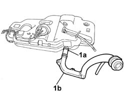

1040A22 FUEL TANK - R + R FOR VERSIONS WITH EVAPORATION CONTROL SYSTEM FOR REPLACEMENT
- Path
- Procedures > 10 ENGINE > 1040 FUEL TANK AND PIPES > 1040A FUEL TANK AND COMPONENTS > 1040A22 FUEL TANK - R + R FOR VERSIONS WITH EVAPORATION CONTROL SYSTEM FOR REPLACEMENT
- Kind
- repair procedure (removal / refitting; the operation number is the code)
- Applies to
- engines: 2.0 16v; all production periods
- Interactive page
- https://sloeber94.github.io/elrnDB-fUlss/en/#/179006979
Applies to: engines: 2.0 16v; all production periods
 Removing
Removing
 Refitting
RefittingOp. 4450B06 LEFT REAR WHEEL R R
See in Op. 1040A10
See in Op. 1040A71
1. Open the retaining band (1a) and remove the tank filler pipe (1b).

Applies to: engines: 2.0 16v; all production periods
Refitting
Removing- Fit the tank filler pipe.
See in Op. 1040A71
See in Op. 1040A10